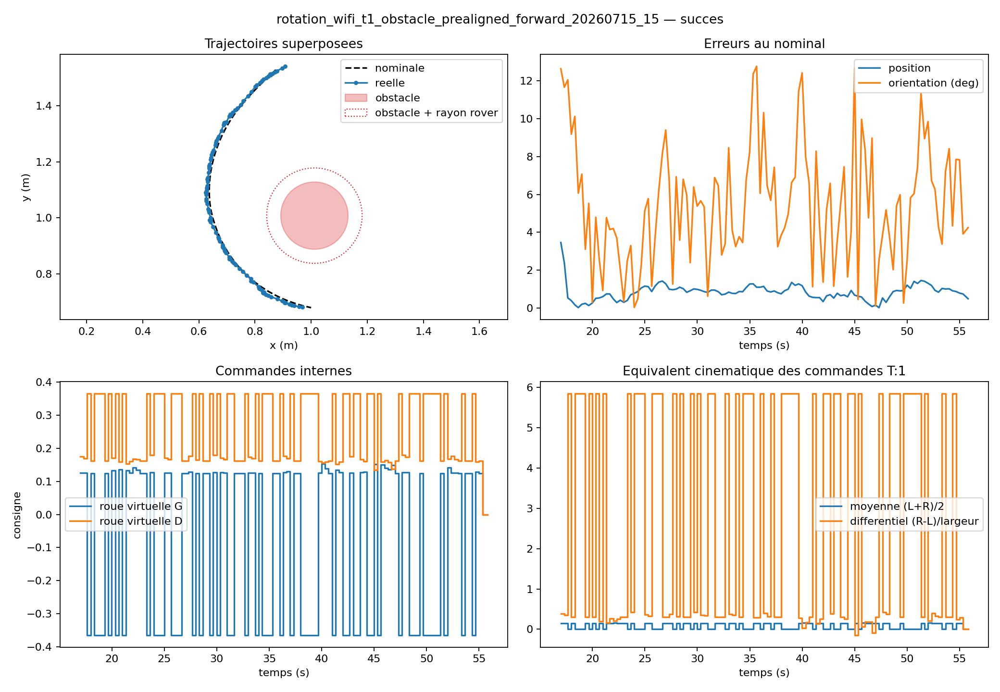

Mean lateral RMSE
fixed-obstacle trialsAutonomous systems · Research showcase
From mathematical
optimization to
measured motion.
We compute collision-aware trajectories, adapt them to what the system observes, and quantify the gap between a plan and a real rover in motion.
Arts et Métiers
CNRS@CREATE · Singapore
Mean final error
two directionsWorst real clearance
positive safety marginArUco detections
across final trials01 The challenge
A path is easy to draw.
A safe trajectory must also be feasible, reactive, and measurable.
An autonomous system has to connect a fixed start to a fixed goal while respecting obstacles, boundaries, velocity, acceleration, and imperfect knowledge of moving agents.
The hard part is not producing a curve. It is building a chain that remains coherent from the mathematical objective to the physical experiment.
02 End-to-end pipeline
One continuous chain.
Seven verifiable steps.
Select a step to move from problem definition to measured physical validation.
Problem definition
Encode the mission, not just the geometry.
Start and goal are fixed. Obstacles, walls, speed, and acceleration become explicit costs or constraints.
03 The method
Plan globally.
Respond locally.
The architecture separates what can be optimized in advance from what must be handled causally at runtime.
A
Variational planning · static scene
The nominal phase
Generate candidates, minimize a discretized action, and produce a smooth reference path around known fixed obstacles.
- Input Known geometry and dynamic limits
- Output Time-parameterized nominal trajectory
- Tools SciPy action minimization or direct Euler–Lagrange residuals
B
Force dynamics · current observation
The causal correction phase
Follow the nominal path while attraction, repulsion, and damping modify the current motion when a mobile agent is observed.
- Input Nominal reference and current mobile state
- Output Locally corrected trajectory
- Update Semi-implicit Euler, Verlet, or Jones variant
Technical layer Open the mathematical core
Variational action
𝒮[x] = ∫0T L(x, ẋ, t) dt
d/dt (∂L/∂ẋ) − ∂L/∂x = 0
d/dt (∂L/∂ẋ) − ∂L/∂x = 0
Fixed endpoints turn trajectory generation into a stationarity problem over the path between them.
Compact obstacle potential
Vobs(d) = α(1/d − 1/d0)²
for d < d0, otherwise 0
for d < d0, otherwise 0
The cost rises inside an influence radius and stays inactive farther away.
Damped force dynamics
mẍ + ξẋ = Fgoal + Fobs + Fmobile
Attraction keeps the goal and nominal path relevant; repulsion and damping manage local correction.
2D planar motionfixed start and goalbounded velocitybounded accelerationcurrent-state mobile observation
04 Numerical strategies
Different solvers answer
different questions.
The comparison is an engineering tool, not a single leaderboard. Speed, convergence, trajectory quality, and robustness must be read together.
StrategyWhat it solvesBest useObserved trade-off
SciPy variational
Discretized action minimization with analytic gradient
High-quality nominal planning
2.548 s median in a two-scenario exploratory benchmark
Direct Euler–Lagrange
Stationarity residual through root or least-squares methods
Numerical formulation studies
Faster campaigns, but convergence remained scenario-sensitive
Straight-line baseline
No nominal optimization
Ablation and runtime baseline
0.0048 s median, without the same planning capability
Benchmark values above cover only two scenarios with shared controller coefficients. They support diagnosis, not a definitive solver ranking.
05 Evidence
What is actually validated?
Every claim is tagged by evidence level. Simulation, software tests, measured motion, and complete physical validation are not interchangeable.
Physical · complete in tested domain
Fixed-obstacle avoidance
Two final runs, opposite directions, safe stop and target reached.
Physical · complete
Metric perception chain
Camera, homography, ArUco tracking, coordinates, and control connected.
Simulation · demonstrated
Dynamic & multi-agent cases
Causal local correction evaluated with fixed and moving agents.
Physical · partial
Moving-agent avoidance
Detection, commands, and safety stop work; full arrival remains open.
Trials 14 & 15 · July 15, 2026
The strongest proof is repeatable, bidirectional, and measured.
The rover followed a curved nominal trajectory around a fixed obstacle in both directions. Both trials reached the target and ended with a safe stop.
- 2 / 2
- successful final runs
- 6.291°
- mean orientation RMSE
- 0
- lost ArUco detections

Experimental layer Open the validation matrix and metric scope
| Capability | Evidence | Status | Scope |
|---|---|---|---|
| Nominal trajectory generation | Software tests + simulation | Validated | 2D scenarios in repository |
| Fixed-obstacle physical tracking | Trials 14–15 | Validated | Documented arena and profiles |
| Smooth continuous tracking | Trials 29–30 | Validated | Quasi-straight segments, no obstacle |
| Causal moving-agent correction | Simulation + physical integration | Partial | No complete physical arrival |
| Multi-agent avoidance | Simulation | Simulation | Not physically demonstrated |
| Aerial drone deployment | None | Not claimed | Physical platform is a rover |
The smooth-tracking metrics (0.283 cm mean lateral RMSE; 0.985 cm mean final error) come from a separate obstacle-free experiment and are intentionally not merged with the fixed-obstacle KPI.
06 Physical system
Pixels become meters.
Meters become motion.
The experimental chain closes the loop between planning, perception, wheel commands, and measured trajectory error.

- 01Basler camera1500 × 1200 monochrome frames
- 02Homographypixel coordinates → arena coordinates
- 03ArUco trackingrover, obstacle, and reference markers
- 04Differential controltrajectory error → wheel commands
- 05Validation logclearance, RMSE, stop, final gap
30 fps
900 / 900 frames captured in 30-second Ethernet tests on both Mac and Raspberry Pi.
Instrumented observation
Every physical claim starts with a traceable measurement.
Corner markers define the arena. IDs identify the rover and obstacle. The rectified view turns image measurements into a common metric frame.
07 The experiment, at a glance
A complete visual system,
ready for the final footage.
Temporary assets already use their final filenames. Replace a file with the real shot and the page updates without layout changes.


08 Current boundary
Validated where measured.
Explicit where incomplete.
Moving-agent completion
The rover receives corrected commands and can stop safely, but a repeatable full avoidance run to the goal is still required.
Multi-agent transfer
Multi-agent behavior is demonstrated in simulation only. Physical deployment would require synchronized state estimation and repeated trials.
Benchmark breadth
Solver timing comparisons remain exploratory. A larger, frozen scenario suite is needed for a general performance claim.
09 People & context
A research project built
between France and Singapore.
The work began in January under Prof. Francisco Chinesta and continued during a summer internship at CNRS@CREATE in Singapore, with technical supervision from Amine Ammar.
Slimane
AOUANOUK
Trajectory optimization, simulation, physical integration, and validation.
PortfolioMathis
BENCHIKH
Trajectory optimization, simulation, physical integration, and validation.
LinkedInAmine
AMMAR
Technical guidance and internship supervision.
Personal websiteProf. Francisco
CHINESTA
Research direction and original project supervision.
ResearchGateJanuary 2026Research initiated
Problem formulation and numerical foundations with Prof. Francisco Chinesta.
Summer 2026Physical integration
Camera, rover control, experimental campaigns, and validation at CNRS@CREATE.
August 1, 2026Research showcase
A concise record of the method, evidence, and remaining boundary.